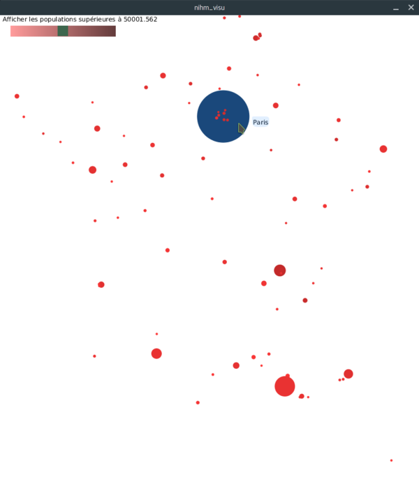
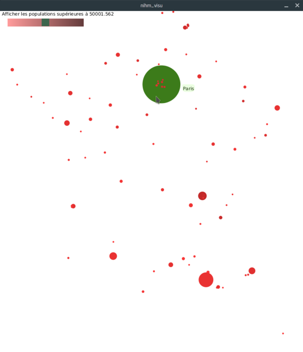
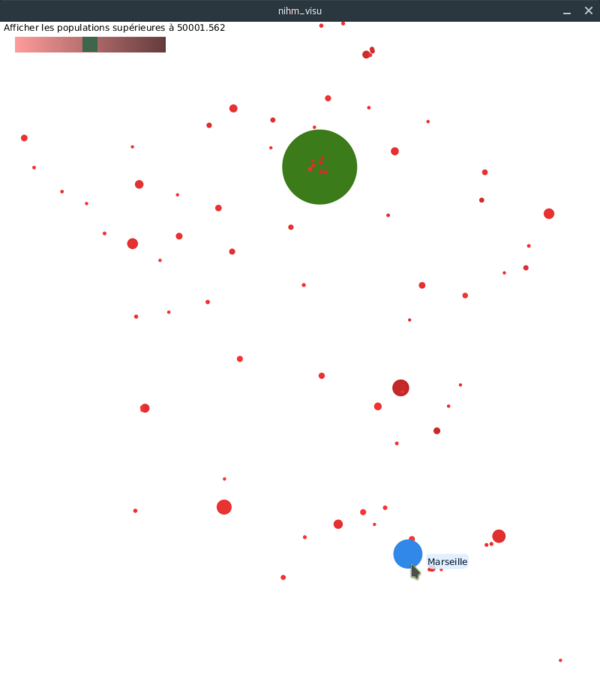
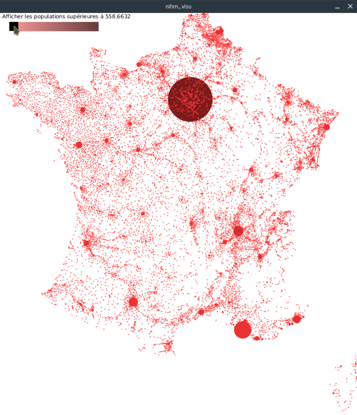

Fonctionnalités
Survol d'une ville par la souris
Lorsque l'on survole une ville avec la souris, celle-ci se colore en bleue, et une étiquette contenant le nom de la ville s'affiche à côté.

Paris survolé
Sélection d'une ville à la souris
Lorsque l'on clique sur une ville, celle-ci se colore en vert. Lorsque l'on sort le curseur de la ville, cette dernière reste selectionnée.

Paris sélectionné
Nous pouvons survoler une autre ville (qui se colorera en bleu) tandis que la ville selectionnée reste colorée en vert.

Paris sélectionné et Marseille survolé
Slider permettant de filtrer les villes en fonction du nombre d'habitants
Un slider permettant de filtrer l'affichage des villes en fonction de leur population a été implémenté. Celui-ci s'étend de 3.125 habitants à 100 000 habitants.

Villes de + de 500 habitants
 Villes de + de 100 000 habitants
Villes de + de 100 000 habitants